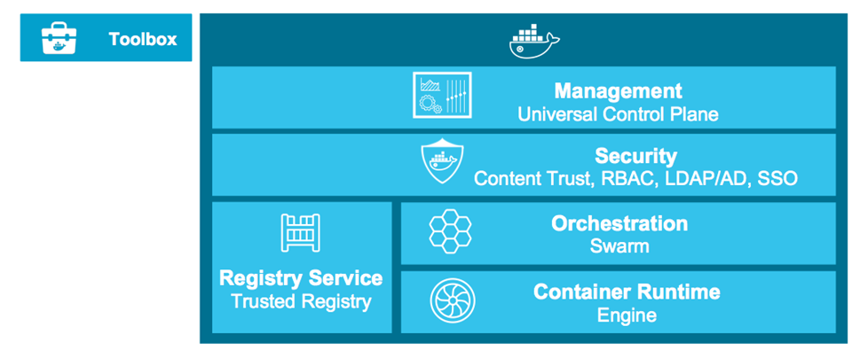
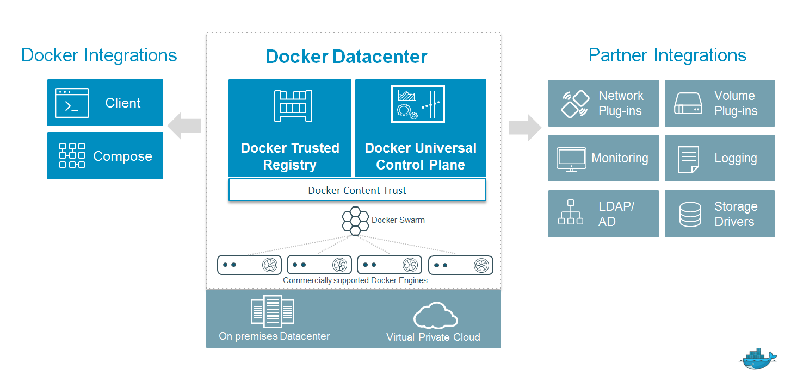
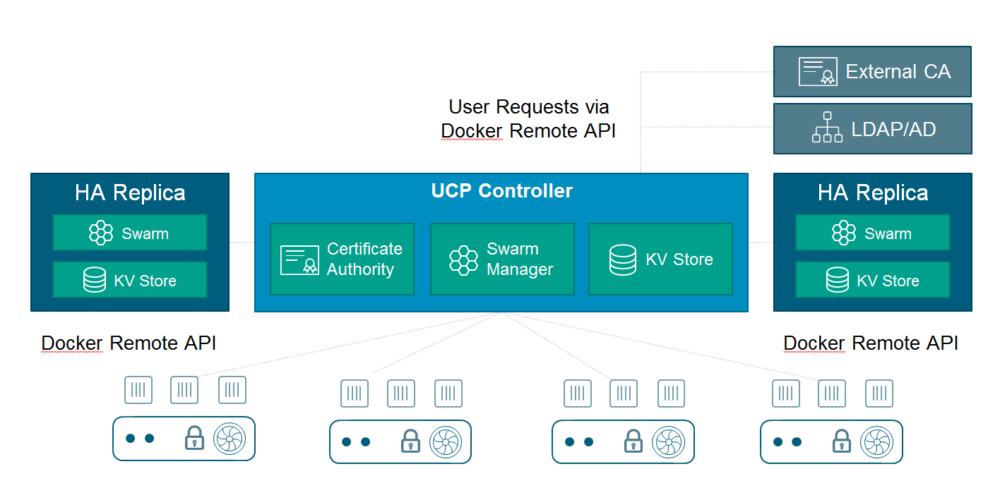

Mini-lecture:
Mini-lecture:
Docker Intro for Ops and Docker Datacenter
What should Operations know about Docker?
- VM vs Container
- Ephemeral
- Stateless vs stateful (app architecture)
- Orders of magnitude
- Size and density of storage
- Speed
- Immutable Infrastructure
Intro to Docker Datacenter
Docker Datacenter
- Integrated, end-to-end platform for agile application development and management in production

Integration with existing enterprise systems

UCP Capabilities
- Management at Scale
- GUI management for apps, containers, nodes, networks, images, volumes
- Manage a single Swarm cluster (100s of nodes, 1000s of containers)
- Monitoring and logging of UCP events
- Out of the box HA
- Enterprise Grade Controls
- LDAP/AD integration
- Role-based access control (RBAC) for teams
- Push and pull images with DTR
- Out of the box TLS
UCP Capabilities (cont'd)
- Docker Native Solution
- Integrated with Swarm, Compose, CS Engine, and DTR
- Fully Docker API compatible
- Consistent Docker Experience with Docker CLI and Toolbox support
- No change to developer workflow
Deploy and manage applications with UCP
- Manage Containers
- Deploy from GUI and set restart policies, environment variables, CPU and memory
- Start, stop, destrop, rename, scale
- View container log, stats
- Login to container from browser
- Manage Compose apps
- Deploy Compose apps using the client bundle
- Start, stop or delete Compose apps
- Inspect individual containers
UCP Cluster Architecture

Integrated networking
- Create a network from the GUI
- Select which network to deploy containers to
- Your existing networks auto-populate the network pull down